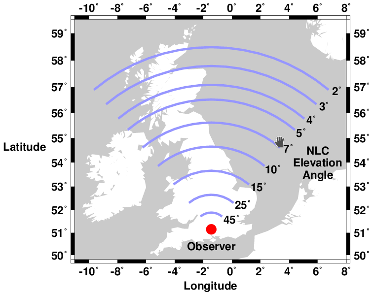
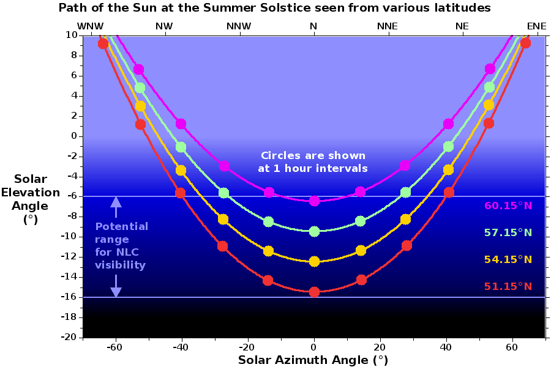

Noctilucent Clouds (NLCs) can potentially be seen from anywhere within the British Isles, i.e. from the latitude band between 50° and 60° N.
Follow this link to see a larger version of the above image in a new tab.
The extraordinarily cold temperatures (below -125°C) required for ice crystals to form occur almost daily between late May and early August at latitudes above 65°N. The further south you are, the less frequently they occur and the shorter the NLC season will be. It is rare for NLCs to extend below 53° N and it is exceptional for them to extend below 50° N. Nevertheless, because of their high altitude (82 km) they can be seen from up to 7° further south (approximately 800 km away). They will be at a very low elevation angle from this distance. The further north you are, the higher they will appear in the sky. The map above shows the potential location of NLCs for an observer at the Chilbolton Atmospheric Observatory (CAO) (51.15°N). For an observer at a higher latitude, the whole pattern simply shifts north.
Follow this link to see a larger version of the above image in a new tab.
Since the atmosphere is so thin at the altitude where NLCs form (the pressure and density are approximately one hundred thousandth of their sea level values), NLCs are too insubstantial to be seen against the brightness of the sunlit lower atmosphere. They can only be seen during twilight hours, when the Sun is at least 6° below the horizon. They can remain directly illuminated by the Sun until it is approximately 16° below the horizon. At this low solar elevation angle, only the NLCs close to the horizon will be illuminated. NLCs at higher elevation angles will only be apparent when the solar elevation angle is closer to 6° below the horizon.
The further north you are, the less dark the mid-summer night sky becomes. At Lerwick in the Shetland Islands (61.16°N), the sky only just becomes dark enough to make NLCs visible on the night of the summer solstice (which occurs on 21st or 22nd June). The minimum solar elevation angle is slightly lower at all latitudes at the beginning and the end of the NLC season. This means that the solar elevation angle drops below 16° during the middle of the night for observers in southern England (51.15°N is the latitude of the Chilbolton Atmospheric Observatory (CAO) where the NLC Camera is located. At higher latitudes, if you are lucky you might be able to see NLCs continuously between dusk and dawn. However, it is more common for them to be visible during the dawn only.
The times at which the solar elevation angle is within the potential range for NLCs to be visible vary with latitude (and to a lesser extent with date and longitude). You will be able to find this information from a number of online resources, including the HM Nautical Almanac Office’s Websurf utility, for which you will need to choose the Alt_Az option.
The biggest limitations you will have for seeing NLCs are: